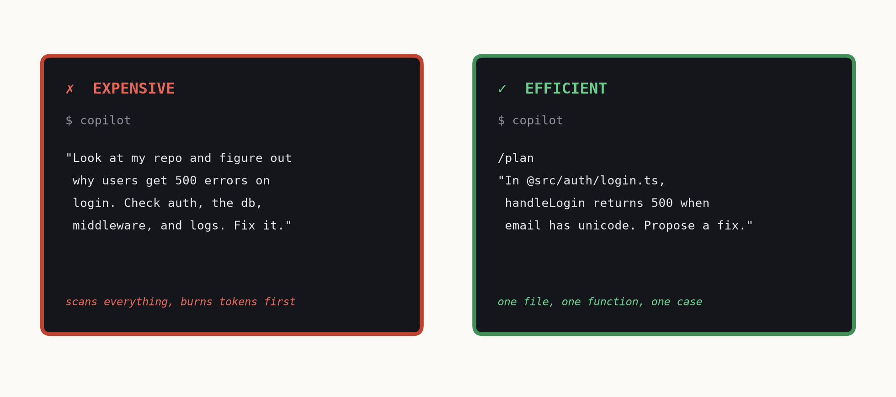

The talk · prompt, review, refine
Prompt, review, refine
The loop that makes Copilot useful is the same one you'll run all day: prompt → review → refine. If the first answer isn't right, rephrase or break it down - don't just accept it.
Four habits that pay off
- Play to its strengths. Copilot is great at tests, repetitive code, explaining code, debugging syntax, and regex. It's not there to replace your judgement.
- Give it context. Open the relevant files, reference specific
@filepaths, not whole directories. The right context in beats a bigger prompt. - Be specific, give an example. State the input, the desired output, and one example. Vague in, vague out. (Slop in, slop out.)
- Right-size the model. A mid-tier model handles most work; save the heavy reasoning model for genuinely hard problems. GitHub Auto mode will help here.
